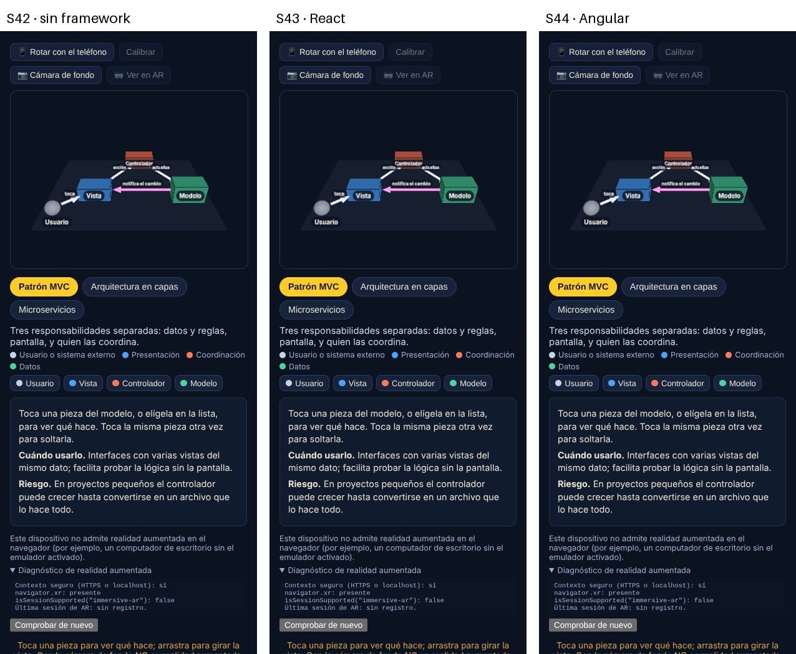

La Sesión 43 enseñó una idea: lo que es pantalla pasa al framework; lo que es motor se queda como estaba. Hoy se repite el experimento con otro framework, y la regla no cambia. visor.ts, xr.ts, sw.ts, db.ts y los modelos como datos siguen intactos. Lo que cambia es cómo piensa el framework la pantalla.
Objetivos de aprendizaje
- ✓Reconocer cómo organiza Angular una aplicación (componentes con plantilla, servicios, inyección de dependencias y señales) y qué trabajo sigue sin ser suyo (Three.js, WebXR, el Service Worker).
- ✓Preparar un proyecto de Angular 22 con su compilador, y los tres ajustes que exigió un código que no se escribió para él.
- ✓Repartir la lógica en servicios con señales y la pantalla en componentes, comparando cada decisión con la de React.
- ✓Cuidar la frontera con el código imperativo:
DestroyRef,afterNextRendery la carga diferida conimport(). - ✓Mantener el Service Worker propio y conectarlo a un compilador que no es Vite.
- ✓Comparar tres versiones del mismo Atlas con cifras reales y aceptar que ninguna gana en todo.
Recursos de esta sesión
- Descargar .zipCheckpoint — cierre de la Sesión 43. El Atlas 3D en React. Es el punto de partida de hoy.
- Descargar .zipVersión terminada de esta sesión. El mismo Atlas en Angular:
app.ts, nueve servicios y siete componentes. Incluye el LEEME y el flujo de GitHub Pages actualizado. - Informe de Lighthouse (S42)Sin framework. Una de las cinco corridas (la de la mediana de rendimiento).
- Informe de Lighthouse (S43)Con React. Una de las cinco corridas (la de la mediana).
- Informe de Lighthouse (S44)Con Angular y carga diferida del visor. Una de las cinco corridas (la de la mediana).
1Qué cambia al pasar de React a Angular
React es una biblioteca: da componentes y hooks, y el resto (compilador, rutas, formularios) se elige aparte. Angular es un marco completo: trae su compilador, su sistema de plantillas, un contenedor de inyección de dependencias, formularios y más. A cambio, pide aceptar sus convenciones. Para esta sesión interesan cuatro piezas:
| Idea | En React (S43) | En Angular (S44) |
|---|---|---|
| La pantalla | Una función que devuelve JSX | Una clase con una plantilla HTML aparte (.ts + .html) |
| El estado | useState dentro de hooks | Señales (signal, computed) dentro de servicios |
| Compartir lógica | Un hook que se llama en cada componente | Un servicio que Angular crea una vez y entrega a quien lo pide con inject() |
| Efectos y limpieza | useEffect y su función de retorno | effect con onCleanup, afterNextRender y DestroyRef |
| Formularios | Campo controlado: value y onChange | [(ngModel)]: enlace en los dos sentidos con una señal |
Un detalle del Angular actual que simplifica todo: desde hace unas versiones, los proyectos nuevos son sin zone.js («zoneless»). Antes, Angular parchaba el navegador para enterarse de cualquier cambio; ahora se entera por las señales: si una señal cambia, se redibuja lo que la lee. Es la misma idea que «estado → pantalla» de React, con otro mecanismo. La prueba C1 de la sección 4 comprueba que
zone.js no está en la página.
La estructura del Atlas en Angular. Arriba, componentes que dibujan; abajo, servicios que guardan la lógica y el estado; en rojo, lo que está fuera del framework y es idéntico al de la Sesión 42.
2Preparar el proyecto
Requisito nuevo: Node 22.22.3 o superior. Angular 22 se niega a ejecutarse con una versión menor (el primer intento de esta sesión, con Node 22.22.0, terminó con ese error). Comprueba con
node -v antes de empezar. Es la razón por la que el flujo de GitHub Pages cambia en esta sesión (sección 9).Un proyecto nuevo se crea con ng new, que hace preguntas (hoja de estilos: CSS; renderizado en servidor: no). Aquí el proyecto se preparó en un directorio limpio y se llevó el código de la Sesión 43 encima. Eso obligó a cuatro decisiones de configuración, todas pequeñas y todas con un motivo:
- El punto de entrada.
main.tspasó de 649 líneas (Sesión 42) a 13, y solo dice qué componente arrancar. - Una opción del compilador. Angular activa por defecto
noPropertyAccessFromIndexSignature, que prohíbe escribiruserData.piezaId(el visor lo hace desde la Sesión 40). Se desactivó entsconfig.jsoncon un comentario que lo explica, en lugar de reescribir un motor que ya está probado. - La carpeta de salida. En
angular.json,outputPathqueda como{ base: "dist", browser: "" }, para que los archivos queden directamente endist/(por defecto Angular los mete endist/browser/), como en las sesiones anteriores y como espera el flujo de publicación. - Una variable que ya no existe. Los archivos
avisos.ts,descargas.tsysw.tsleíanimport.meta.env.BASE_URL, una variable que define Vite. Angular no la define.
src/main.ts (el punto de entrada)
bootstrapApplication(App, appConfig)
.then((app) => {
// Solo en desarrollo: un asa para que las pruebas puedan destruir la aplicación y comprobar la limpieza.
if (isDevMode()) (window as unknown as { __atlas: { destruir: () => void } }).__atlas = { destruir: () => app.destroy() };
})
.catch((err) => console.error(err));La cuarta decisión merece detenerse. La ruta base de la app (/ en local, /nombre-del-repo/ en GitHub Pages) la fija Angular en la etiqueta <base href> del index.html, con ng build --base-href=.... Entonces la ruta base se lee de ahí. Pero el mismo archivo lo usa el Service Worker, que no tiene document; allí la ruta es el alcance con que se registró. Un solo archivo resuelve los dos casos:
src/base.ts (una variable, dos entornos)
const g = globalThis as unknown as { document?: { baseURI: string }; registration?: { scope: string } };
export const BASE_URL = new URL(g.document?.baseURI ?? g.registration!.scope).pathname;Con ese archivo, avisos.ts, descargas.ts y sw.ts cambiaron una línea cada uno (el import de BASE_URL). El resto del motor no se tocó. Y la compilación:
$ npm run build
✔ Building...
Initial chunk files | Names | Raw size | Estimated transfer size
main-2QDUYDRM.js | main | 222.02 kB | 62.66 kB
styles-NF7OE3ID.css | styles | 6.44 kB | 1.53 kB
chunk-GD7SK6UO.js | - | 3.56 kB | 1.50 kB
| Initial total | 232.01 kB | 65.69 kB
Lazy chunk files | Names | Raw size | Estimated transfer size
chunk-XFRBEUET.js | visor | 528.26 kB | 110.71 kB
PWA · Service Worker propio
precache 9 entries (753.84 KiB)
dist/sw.js
✔ Building...
Initial chunk files | Names | Raw size | Estimated transfer size
main-2QDUYDRM.js | main | 222.02 kB | 62.66 kB
styles-NF7OE3ID.css | styles | 6.44 kB | 1.53 kB
chunk-GD7SK6UO.js | - | 3.56 kB | 1.50 kB
| Initial total | 232.01 kB | 65.69 kB
Lazy chunk files | Names | Raw size | Estimated transfer size
chunk-XFRBEUET.js | visor | 528.26 kB | 110.71 kB
PWA · Service Worker propio
precache 9 entries (753.84 KiB)
dist/sw.js
Angular entrega un archivo inicial (main: la app y Angular) y uno diferido (visor: Three.js y el código del visor). El precaché del Service Worker los registró solo: 9 entradas, 753,84 KiB (React: 10 entradas y 778,17 KiB; sin framework: 9 y 558,82 KiB).
3Servicios y componentes
En la Sesión 43 la lógica vivía en siete hooks que cada componente llamaba. En Angular vive en nueve servicios. Un servicio es una clase con @Injectable({ providedIn: "root" }): Angular crea una sola instancia y se la entrega a cualquier componente que la pida con inject(). Es el reparto del Atlas:
| Servicio | Qué guarda o hace | Equivalente en React (S43) |
|---|---|---|
PanelService | Modelo y pieza elegidos; la ficha ampliada | usePanel |
ProgresoService | Visitas, favoritos y notas (IndexedDB) | useProgreso |
VisorService | Crea y destruye el visor de Three.js | Un efecto en App.tsx |
ARService, SensoresService, CamaraService | Entrar y salir de AR; sensores; cámara de fondo | useAR, useSensores, useCamara |
ConexionService, InstalacionService | Banda «sin conexión»; botón y texto de instalación | useConexion, useInstalacion |
SwService | Registro del Service Worker y «listo sin conexión» | useRegisterSW (de vite-plugin-pwa) |
Observa el primero. PanelService guarda el estado en señales y deriva lo demás con computed: la definición del modelo, la pieza y la ficha se recalculan solas cuando cambia el identificador. Y repite el patrón de la Sesión 43: un manejador habla con el visor (imperativo) y actualiza el estado (declarativo).
src/app/servicios/panel.service.ts (el estado y lo derivado)
readonly modeloId = signal(CATALOGO[0].id);
readonly piezaId = signal<string | null>(null);
private readonly fichaCargada = signal<{ id: string; datos: Ficha | null } | null>(null);
readonly def = computed(() => modeloPorId(this.modeloId())!);
readonly pieza = computed(() => this.def().piezas.find((p) => p.id === this.piezaId()));
readonly ficha = computed(() => {
const f = this.fichaCargada();
return f?.id === this.modeloId() ? f.datos : null;
});src/app/servicios/panel.service.ts (un manejador que habla con el visor y con el estado)
// Un manejador de eventos habla con el visor (imperativo) y actualiza el estado (declarativo).
elegirModelo(id: string): void {
const def = modeloPorId(id);
const visor = this.visorSvc.visor();
if (!def || !visor) return;
visor.mostrarModelo(def);
this.modeloId.set(id);
this.piezaId.set(null);
}La ficha ampliada llega de la caché o de la red, y puede tardar. Si cambias de modelo antes de que llegue, la respuesta vieja no debe pisar a la nueva. En React eso es la bandera cancelado de un useEffect; en Angular, el effect recibe una función onCleanup que se ejecuta antes de la siguiente ejecución:
src/app/servicios/panel.service.ts (descartar la respuesta vieja)
effect((alLimpiar) => {
const id = this.modeloId();
let vigente = true; // si cambias de modelo antes de que llegue, la respuesta vieja se descarta
alLimpiar(() => (vigente = false));
void leerFicha(id).then((datos) => {
if (vigente) this.fichaCargada.set({ id, datos });
});
});Componentes que son el elemento que ya existía
En Angular, un componente suele ser una etiqueta nueva (<app-zona-visor>) que envuelve su contenido. Aquí se hizo otra cosa: el selector es de atributo. section[zonaVisor] significa «el componente es el <section> que lleve ese atributo». Así el HTML resultante tiene los mismos elementos, ids y clases que la versión sin framework, y las pruebas de las sesiones anteriores, que buscan por esos ids, no se enteran del cambio (sección 7). Lo mismo hace host: { ... } para poner el id o las clases del propio elemento.
src/app/componentes/zona-visor.ts (selector de atributo y el visor)
@Component({
selector: "section[zonaVisor]",
imports: [PanelModelo],
templateUrl: "./zona-visor.html",
host: { class: "visor-zona" },
})
export class ZonaVisor {
protected readonly visorSvc = inject(VisorService);
protected readonly sensores = inject(SensoresService);
protected readonly camara = inject(CamaraService);
protected readonly ar = inject(ARService);
private readonly contenedor = viewChild.required<ElementRef<HTMLDivElement>>("contenedor");
private readonly video = viewChild.required<ElementRef<HTMLVideoElement>>("video");
constructor() {
// El <div id="visor"> existe recién después del primer dibujo: entonces se crea el visor.
afterNextRender(() => {
this.camara.registrarVideo(this.video().nativeElement);
this.visorSvc.montar(this.contenedor().nativeElement);
});
}Una excepción.
App sí es una etiqueta propia, <app-root>, porque no hay elemento previo que reutilizar. Una regla de styles.css (display: contents) hace que esa etiqueta no cuente en el diseño de la página.4La frontera con Three.js: crear, destruir y diferir
El visor se crea cuando el <div> que lo contiene ya existe. Angular ofrece afterNextRender: una función que corre una vez, después del primer dibujo (y solo en el navegador). Y para deshacer, DestroyRef: cada servicio o componente puede apuntar qué limpiar cuando Angular lo destruya.
src/app/servicios/visor.service.ts (crear, destruir y diferir)
@Injectable({ providedIn: "root" })
export class VisorService {
readonly visor = signal<Visor | null>(null);
/** Mensaje de aviso bajo la barra de botones (cámara, sensores, AR). */
readonly aviso = signal("");
private destruido = false;
constructor() {
// La limpieza: sin ella, el canvas, los oyentes y los recursos de la GPU quedarían vivos.
inject(DestroyRef).onDestroy(() => {
this.destruido = true;
this.visor()?.destruir();
});
}
async montar(contenedor: HTMLElement): Promise<void> {
// import() dinámico: el compilador de Angular saca visor.ts y Three.js del archivo principal y los deja
// en un archivo aparte que se descarga DESPUÉS de dibujar la página (Sesión 42: el mismo remedio, otra técnica).
const { crearVisor } = await import("../../visor");
if (this.destruido) return; // la aplicación se destruyó mientras se descargaba el archivo
this.visor.set(crearVisor(contenedor));
}
}Tres líneas importan. this.visor()?.destruir() es la limpieza: sin ella el canvas, los oyentes y los recursos de la GPU quedan vivos. await import("../../visor") es la carga diferida (la ventaja y el problema de esto se miden en la sección 8). Y if (this.destruido) return cubre un caso fino: la aplicación puede destruirse mientras el archivo diferido se descarga, y entonces no hay que crear nada.
En React, StrictMode montaba y desmontaba cada componente a propósito para delatar efectos sin limpieza. Angular no tiene ese mecanismo, así que hubo que construir la prueba. En modo desarrollo se expone un asa (window.__atlas.destruir(), definida en main.ts solo si isDevMode()) que destruye la aplicación; la prueba la llama y cuenta cuántas veces el visor sigue pidiendo cuadros de animación (requestAnimationFrame). Si la limpieza funciona, esa cuenta debe caer a cero.
$ node test_s44.js
A1) desarrollo → lienzos en el visor: 1
A2) cambiar de modelo en desarrollo → piezas: 5 | errores de página: []
A3) con la app viva el bucle de dibujo sigue pidiendo cuadros → llamadas en 0,5 s: 30
A4) tras destruir la aplicación → llamadas de requestAnimationFrame en 0,7 s: 0 | errores de página: []
B1) escribir una nota y marcar favorito otra tarjeta → nota conservada: "repasar el controlador" | botón: ★ Favorito
C1) zone.js en la página → undefined
RESULTADO: todo en orden
A1) desarrollo → lienzos en el visor: 1
A2) cambiar de modelo en desarrollo → piezas: 5 | errores de página: []
A3) con la app viva el bucle de dibujo sigue pidiendo cuadros → llamadas en 0,5 s: 30
A4) tras destruir la aplicación → llamadas de requestAnimationFrame en 0,7 s: 0 | errores de página: []
B1) escribir una nota y marcar favorito otra tarjeta → nota conservada: "repasar el controlador" | botón: ★ Favorito
C1) zone.js en la página → undefined
RESULTADO: todo en orden
Y la prueba de la prueba, otra vez: quitar la limpieza y ver que falla.
$ sed -i 's|^ this.visor()?.destruir();| // this.visor()?.destruir();|' src/app/servicios/visor.service.ts (se comenta la limpieza del visor)
$ node test_s44.js
A1) desarrollo → lienzos en el visor: 1
A2) cambiar de modelo en desarrollo → piezas: 5 | errores de página: []
A3) con la app viva el bucle de dibujo sigue pidiendo cuadros → llamadas en 0,5 s: 30
A4) tras destruir la aplicación → llamadas de requestAnimationFrame en 0,7 s: 42 | errores de página: []
✗ FALLÓ: tras destruir la aplicación el bucle de dibujo debe detenerse (la limpieza del visor)
B1) escribir una nota y marcar favorito otra tarjeta → nota conservada: "repasar el controlador" | botón: ★ Favorito
C1) zone.js en la página → undefined
RESULTADO: hay 1 fallos
$ node test_s44.js
A1) desarrollo → lienzos en el visor: 1
A2) cambiar de modelo en desarrollo → piezas: 5 | errores de página: []
A3) con la app viva el bucle de dibujo sigue pidiendo cuadros → llamadas en 0,5 s: 30
A4) tras destruir la aplicación → llamadas de requestAnimationFrame en 0,7 s: 42 | errores de página: []
✗ FALLÓ: tras destruir la aplicación el bucle de dibujo debe detenerse (la limpieza del visor)
B1) escribir una nota y marcar favorito otra tarjeta → nota conservada: "repasar el controlador" | botón: ★ Favorito
C1) zone.js en la página → undefined
RESULTADO: hay 1 fallos
Sin
destruir(), el bucle de dibujo sigue vivo. Tras destruir la aplicación hubo 42 llamadas a requestAnimationFrame en 0,7 s en lugar de 0, y la prueba falló. Se restauró la línea y volvió a pasar. La prueba C1 comprueba además que zone.js no está cargado: confirma que la app es de verdad «zoneless», no solo que lo dice la configuración.5Estado que vive fuera de Angular: la instalación y el Service Worker
El evento beforeinstallprompt de la Sesión 41 se guarda en una variable de instalar.ts, que no es de Angular. En React hizo falta useSyncExternalStore para suscribirse a ella, con sus reglas sobre «fotos» y funciones fuera del hook. En Angular basta una señal: instalar.ts avisa (con su propia función de aviso) y el servicio vuelve a leer el estado y se lo pone a la señal.
src/app/servicios/instalacion.service.ts (suscribir y limpiar)
constructor() {
const dejarDeEscuchar = iniciarInstalacion(() => {
this.estado.set(estadoInstalacion());
this.rechazada.set(instalacionRechazada());
});
inject(DestroyRef).onDestroy(dejarDeEscuchar);
}Un detalle que mejora lo de la Sesión 43. Allí, el oyente de beforeinstallprompt se registraba en un efecto, después del primer dibujo, y la guía advertía que era una carrera. En Angular, el servicio se crea cuando alguien lo pide, y App lo pide en su constructor, antes de que nada se dibuje:
src/app/app.ts (pedirlo antes del primer dibujo)
constructor() {
// Pedir el servicio aquí lo crea ahora, ANTES del primer dibujo: el oyente de beforeinstallprompt
// ya está puesto cuando la página aparece. (En React se ponía en un efecto, después del primer dibujo.)
inject(InstalacionService);
const sw = inject(SwService);
afterNextRender(() => sw.iniciar());
// appinstalled se dispara cuando el usuario instala la PWA.
const alInstalar = () => void mostrarAviso("Atlas 3D instalado", "Ya puedes abrirlo desde tu pantalla de inicio.", BASE_URL, "atlas-instalado");
window.addEventListener("appinstalled", alInstalar);
inject(DestroyRef).onDestroy(() => window.removeEventListener("appinstalled", alInstalar));
}inject(InstalacionService) sin guardar el resultado puede parecer raro: solo se pide para que exista ya. La carrera de la Sesión 43 queda cerrada, y la actividad 4 de aquella sesión tiene aquí su respuesta.
El Service Worker: por qué se conserva el propio
Angular trae su propio Service Worker (ngsw), que se activa con provideServiceWorker() o con ng add @angular/pwa. Es bueno para el caso común: precaché de archivos y caché de peticiones, configurados con un archivo JSON. Pero el Service Worker del Atlas ya hace cosas que ngsw no ofrece como piezas listas: la descarga voluntaria de fichas, la sincronización en segundo plano y los avisos que abren la app con ?modelo=ID (Sesiones 26, 37 y 40). Por eso se conserva sw.ts y se cambia solo quién lo compila y quién lo registra.
Quién lo compila. Con Vite, vite-plugin-pwa lo hacía dentro de vite build. Angular no tiene ese plugin, así que un script en dos pasos hace lo mismo: esbuild junta sw.ts con Workbox y con db.ts en un solo archivo, y workbox-build recorre dist/ y escribe la lista de precaché donde sw.ts dice self.__WB_MANIFEST. Un guion, scripts/build.mjs, encadena los tres pasos: ng build, la comprobación de tipos del Service Worker (el compilador de Angular no lo ve) y el empaquetado.
scripts/build-sw.mjs (el precaché, inyectado)
const { count, size, warnings } = await injectManifest({
swSrc: temporal,
swDest: "dist/sw.js",
globDirectory: "dist",
globPatterns: ["**/*.{html,js,css,png,json}"],
// Las fichas de modelos NO se precachean: se descargan bajo demanda (la descarga «voluntaria» de la Sesión 37).
// Tampoco el propio Service Worker ni su archivo temporal.
globIgnores: ["modelos/**", "sw.js", ".sw-empaquetado.js"],
});Quién lo registra. SwService usa workbox-window, la biblioteca de Workbox para el lado de la página. Hace lo mismo que useRegisterSW: avisar cuando el precaché quedó completo y recargar cuando una versión nueva toma el control.
src/app/servicios/sw.service.ts (registrar con workbox-window)
const wb = new Workbox(`${BASE_URL}sw.js`, { scope: BASE_URL });
// Primera instalación: el precaché quedó completo.
wb.addEventListener("activated", (e) => {
if (e.isUpdate) return;
this.offlineReady.set(true);
// El usuario está mirando la pantalla: la notificación solo si NO la está mirando.
if (document.visibilityState !== "visible") {
void mostrarAviso("Atlas 3D listo", "Ya funciona sin conexión.", BASE_URL, "atlas-offline");
}
});
// Versión nueva (autoUpdate): cuando toma el control, se recarga para usarla.
wb.addEventListener("controlling", (e) => {
if (e.isUpdate) window.location.reload();
});
wb.register().catch((error) => console.error("Error al registrar el SW de Workbox:", error));Lo que cambia para ti:
npm run dev ya no tiene Service Worker. ng serve no genera sw.js (lo produce la compilación de producción), y SwService no intenta registrarlo en desarrollo (isDevMode()). Para probar el modo sin conexión, usa npm run build y npm run preview.6Dos casos de frontera: un evento poco común y los formularios
La capa de AR y beforexrselect
WebXR pide un elemento como «dom-overlay», que debe existir antes de pedir la sesión y no reemplazarse mientras dure. OverlayAR es ese elemento (el componente es el <div id="xr-overlay">) y se lo entrega al servicio en su constructor. Los botones del overlay no deben contar como «tocar para colocar»: el navegador avisa con el evento beforexrselect y basta cancelarlo.
En React no había propiedad para ese evento y hubo que enlazarlo a mano con addEventListener en un efecto. Angular enlaza cualquier evento del DOM con la misma sintaxis, (nombre)="...", sea de los conocidos o no:
src/app/componentes/overlay-ar.html (un evento cualquiera, en la plantilla)
<button type="button" id="btn-pieza-ant" aria-label="Pieza anterior" (click)="panel.recorrerPiezas(-1)" (beforexrselect)="$event.preventDefault()">◀</button>
<p id="xr-pieza" class="xr-pieza">{{ textoPieza() }}</p>
<button type="button" id="btn-pieza-sig" aria-label="Pieza siguiente" (click)="panel.recorrerPiezas(1)" (beforexrselect)="$event.preventDefault()">▶</button>Las notas: el defecto de la Sesión 42, otra vez resuelto
Recuerda el defecto de la Sesión 42: escribir una nota en una tarjeta y marcar favorito en otra rehacía todo el catálogo y borraba la nota. Angular lo evita por la misma razón que React: no reescribe el catálogo, solo cambia lo que cambió. Cada tarjeta es un componente con su propia señal nota, enlazada al campo con [(ngModel)] (el «enlace en los dos sentidos» del módulo de formularios):
src/app/componentes/tarjeta.html (el campo enlazado a una señal)
<div class="nota-zona">
<input type="text" class="nota-input" placeholder="Nota de estudio..." [(ngModel)]="nota" />
<button class="btn-guardar-nota" [attr.data-id]="modelo().id" (click)="guardar()">🔒 Guardar nota</button>
<button class="btn-ver-nota" [attr.data-id]="modelo().id" [disabled]="!progreso()?.notaCifrada" (click)="progresoSvc.verNota(modelo().id)">👁 Ver nota</button>
</div>La prueba B1 (escribir una nota, marcar favorito en otra tarjeta y mirar si la nota sigue) pasa, como se vio arriba con el resto de test_s44.js. Ya se había comprobado en la Sesión 43 que esta prueba sí detecta el defecto cuando se la dirige a la versión sin framework.
7Las pruebas de siempre, sin tocar
Como en la Sesión 43, todas las pruebas anteriores se ejecutaron contra la compilación nueva sin cambiar su lógica. Hay un matiz esta vez, y es instructivo. La primera compilación de Angular salía con un solo archivo grande (la app, Angular, Three.js y el visor juntos), y la prueba de la Sesión 42 la rechazó:
4) service worker → {"activo":true,"controla":true,"precache":7}
✗ FALLÓ: precaché completo
✗ FALLÓ: precaché completo
La prueba exige al menos 8 archivos en el precaché; la compilación tenía 7. Es un indicador indirecto (muchos archivos = Three.js separado), pero acertó: la Sesión 42 había separado Three.js del código de la app, y la primera versión de Angular lo había deshecho sin que nadie lo notara. El remedio es el import() dinámico de la sección 4: Angular saca el visor y Three.js a un archivo aparte, el precaché sube a 9 entradas y la misma prueba, sin cambiarla, pasa:
$ S42DIR=s44 node test_s42.js
1) documento → {"lang":"es","viewport":"width=device-width, initial-scale=1.0","descr":140,"tema":"#0b1220","main":1,"h1":1,"contextoSeguro":true,"titulo":"Atlas 3D de Arquitectura de Software"}
2) manifest → errores de Chrome: [] | name: Atlas 3D de Arquitectura de Software | display: standalone | start_url: ./ | iconos: ["192x192","512x512","512x512/maskable"]
3) Chrome dice: errores de instalabilidad → []
4) service worker → {"activo":true,"controla":true,"precache":9}
5) servidor caído y recarga → {"canvas":1,"pestanas":3}
6) desplazamiento de diseño acumulado (CLS) al cargar → 0.008
7) escena quieta durante 1,5 s → llamadas de dibujo: 0
8) arrastrar para girar → llamadas de dibujo nuevas: sí (744)
9) tras soltar y pasar la inercia → vuelve a quedarse quieta: sí
10) elegir una pieza → llamadas de dibujo nuevas: sí
11) cambiar de modelo → llamadas de dibujo nuevas: sí
12) cambiar el tamaño de la ventana → llamadas de dibujo nuevas: sí
pageerrors: []
RESULTADO: todo en orden
1) documento → {"lang":"es","viewport":"width=device-width, initial-scale=1.0","descr":140,"tema":"#0b1220","main":1,"h1":1,"contextoSeguro":true,"titulo":"Atlas 3D de Arquitectura de Software"}
2) manifest → errores de Chrome: [] | name: Atlas 3D de Arquitectura de Software | display: standalone | start_url: ./ | iconos: ["192x192","512x512","512x512/maskable"]
3) Chrome dice: errores de instalabilidad → []
4) service worker → {"activo":true,"controla":true,"precache":9}
5) servidor caído y recarga → {"canvas":1,"pestanas":3}
6) desplazamiento de diseño acumulado (CLS) al cargar → 0.008
7) escena quieta durante 1,5 s → llamadas de dibujo: 0
8) arrastrar para girar → llamadas de dibujo nuevas: sí (744)
9) tras soltar y pasar la inercia → vuelve a quedarse quieta: sí
10) elegir una pieza → llamadas de dibujo nuevas: sí
11) cambiar de modelo → llamadas de dibujo nuevas: sí
12) cambiar el tamaño de la ventana → llamadas de dibujo nuevas: sí
pageerrors: []
RESULTADO: todo en orden
Lo que esto confirma: el manifest y la instalabilidad según Chrome siguen sin errores (2 y 3); el Service Worker controla la página con 9 entradas de precaché (4); sin servidor, el visor se monta con una sola capa de dibujo y 3 pestañas (5); el CLS medido por la prueba es 0,008 (6); y el dibujo bajo demanda de la Sesión 42 se conserva (7 a 12).
$ S41DIR=s44 node test_s41.js | tail -14
B1) llega beforeinstallprompt → defaultPrevented: true | botón visible: true | texto: Puedes instalarla: se abre a pantalla completa, desde su icono, y funciona sin conexión.
C1) clic en «Instalar» → prompt() llamado 1 vez | botón visible: false
C2) llega appinstalled → texto: ✓ Instalada. Ábrela desde su icono en la pantalla de inicio.
D1) usuario cancela → botón visible: false | texto: Cancelaste la instalación. Chrome decide cuándo volver a ofrecerla; mientras tanto, usa el menú ⋮ → «Instalar app».
D2) Chrome vuelve a ofrecer la instalación → botón visible: true
E1) modo standalone → botón visible: false | texto: ✓ Estás usando Atlas 3D como app instalada.
F1) iPhone → botón visible: false | texto: En iPhone y iPad no hay botón: en Safari toca Compartir y luego «Añadir a pantalla de inicio».
G1) en línea → banda: null
G2) se corta la red → banda: Sin conexión: los modelos y las fichas descargadas siguen disponibles.
G3) sin red se cambia de modelo → «Niveles apilados: cada capa solo habla con la inme…»
G4) vuelve la red → banda: Volvió la conexión.
G5) 3,3 s después → banda: null
pageerrors: []
RESULTADO: todo en orden
B1) llega beforeinstallprompt → defaultPrevented: true | botón visible: true | texto: Puedes instalarla: se abre a pantalla completa, desde su icono, y funciona sin conexión.
C1) clic en «Instalar» → prompt() llamado 1 vez | botón visible: false
C2) llega appinstalled → texto: ✓ Instalada. Ábrela desde su icono en la pantalla de inicio.
D1) usuario cancela → botón visible: false | texto: Cancelaste la instalación. Chrome decide cuándo volver a ofrecerla; mientras tanto, usa el menú ⋮ → «Instalar app».
D2) Chrome vuelve a ofrecer la instalación → botón visible: true
E1) modo standalone → botón visible: false | texto: ✓ Estás usando Atlas 3D como app instalada.
F1) iPhone → botón visible: false | texto: En iPhone y iPad no hay botón: en Safari toca Compartir y luego «Añadir a pantalla de inicio».
G1) en línea → banda: null
G2) se corta la red → banda: Sin conexión: los modelos y las fichas descargadas siguen disponibles.
G3) sin red se cambia de modelo → «Niveles apilados: cada capa solo habla con la inme…»
G4) vuelve la red → banda: Volvió la conexión.
G5) 3,3 s después → banda: null
pageerrors: []
RESULTADO: todo en orden
$ S40DIR=s44 node test_s40.js | tail -8
I1) base v2 preparada con identificadores de la demo
I2) tras abrir la app → {"version":3,"progreso":[["microservicios",false,333],["mvc",true,111]],"descargas":[["capas","pendiente"],["mvc","pendiente"]]}
J1) antes de usar AR → rastro: null
J2) dentro de AR → rastro: activa | diagnóstico: Última sesión de AR: sin registro.
J3) tras salir → rastro: fin-ok
J4) diagnóstico → Última sesión de AR: terminó completa (hace 1 s).
J5) rastro interrumpido simulado, tras recargar → Última sesión de AR: se interrumpió en el paso «fin-3-ancla» (hace 4 s). | panel abierto: true
pageerrors: []
I1) base v2 preparada con identificadores de la demo
I2) tras abrir la app → {"version":3,"progreso":[["microservicios",false,333],["mvc",true,111]],"descargas":[["capas","pendiente"],["mvc","pendiente"]]}
J1) antes de usar AR → rastro: null
J2) dentro de AR → rastro: activa | diagnóstico: Última sesión de AR: sin registro.
J3) tras salir → rastro: fin-ok
J4) diagnóstico → Última sesión de AR: terminó completa (hace 1 s).
J5) rastro interrumpido simulado, tras recargar → Última sesión de AR: se interrumpió en el paso «fin-3-ancla» (hace 4 s). | panel abierto: true
pageerrors: []
$ S39DIR=s44 node test_s39.js | tail -8
G2) tras tocar (de pie en x=1, mirando al frente) → {hitTest:no,anclas:sí,anclado:no,fase:colocado,escala:0.25,giro:0,pos:[1,-0.3,-1.48]}
G3) los gestos también funcionan sin hit-test → escala: 0.5
H1) sin «anchors» → Sesión de realidad aumentada activa. El navegador no concedió: dom-overlay, anchors.
H2) tocar → {hitTest:sí,anclas:no,anclado:no,fase:colocado,escala:0.25,giro:0,pos:[0,-1.4,-2.34]} | anclas creadas: {"crearAncla":0,"borrarAncla":0}
I1) createAnchor rechazado → {hitTest:sí,anclas:sí,anclado:no,fase:colocado,escala:0.25,giro:0,pos:[0,-1.4,-2.34]}
J1) intentos de petición → ["[\"local\",\"hit-test\"]","[\"local\"]"] | estado: Sesión de realidad aumentada activa. El navegador no concedió: dom-overlay.
J2) tocar tras el reintento → {hitTest:sí,anclas:sí,anclado:sí,fase:colocado,escala:0.25,giro:0,pos:[0,-1.4,-2.34]}
pageerrors: []
G2) tras tocar (de pie en x=1, mirando al frente) → {hitTest:no,anclas:sí,anclado:no,fase:colocado,escala:0.25,giro:0,pos:[1,-0.3,-1.48]}
G3) los gestos también funcionan sin hit-test → escala: 0.5
H1) sin «anchors» → Sesión de realidad aumentada activa. El navegador no concedió: dom-overlay, anchors.
H2) tocar → {hitTest:sí,anclas:no,anclado:no,fase:colocado,escala:0.25,giro:0,pos:[0,-1.4,-2.34]} | anclas creadas: {"crearAncla":0,"borrarAncla":0}
I1) createAnchor rechazado → {hitTest:sí,anclas:sí,anclado:no,fase:colocado,escala:0.25,giro:0,pos:[0,-1.4,-2.34]}
J1) intentos de petición → ["[\"local\",\"hit-test\"]","[\"local\"]"] | estado: Sesión de realidad aumentada activa. El navegador no concedió: dom-overlay.
J2) tocar tras el reintento → {hitTest:sí,anclas:sí,anclado:sí,fase:colocado,escala:0.25,giro:0,pos:[0,-1.4,-2.34]}
pageerrors: []
Los recursos de la GPU al dar ocho vueltas entre modelos (los números vuelven a los mismos valores cada tres modelos: el visor se limpia bien) y la publicación en una subruta, como en GitHub Pages (ng build --base-href=/atlas-3d/):
inicio {"Texture":16,"Framebuffer":3,"Buffer":57,"Program":5,"Shader":0,"VertexArray":17}
ciclo 0 mvc {"Texture":16,"Framebuffer":3,"Buffer":59,"Program":6,"Shader":0,"VertexArray":18}
ciclo 1 capas {"Texture":19,"Framebuffer":3,"Buffer":79,"Program":6,"Shader":0,"VertexArray":23}
ciclo 2 microservicios {"Texture":19,"Framebuffer":3,"Buffer":121,"Program":6,"Shader":0,"VertexArray":35}
ciclo 3 mvc {"Texture":16,"Framebuffer":3,"Buffer":59,"Program":6,"Shader":0,"VertexArray":18}
ciclo 4 capas {"Texture":19,"Framebuffer":3,"Buffer":79,"Program":6,"Shader":0,"VertexArray":23}
ciclo 5 microservicios {"Texture":19,"Framebuffer":3,"Buffer":121,"Program":6,"Shader":0,"VertexArray":35}
ciclo 6 mvc {"Texture":16,"Framebuffer":3,"Buffer":59,"Program":6,"Shader":0,"VertexArray":18}
ciclo 7 capas {"Texture":19,"Framebuffer":3,"Buffer":79,"Program":6,"Shader":0,"VertexArray":23}
errores []
ciclo 0 mvc {"Texture":16,"Framebuffer":3,"Buffer":59,"Program":6,"Shader":0,"VertexArray":18}
ciclo 1 capas {"Texture":19,"Framebuffer":3,"Buffer":79,"Program":6,"Shader":0,"VertexArray":23}
ciclo 2 microservicios {"Texture":19,"Framebuffer":3,"Buffer":121,"Program":6,"Shader":0,"VertexArray":35}
ciclo 3 mvc {"Texture":16,"Framebuffer":3,"Buffer":59,"Program":6,"Shader":0,"VertexArray":18}
ciclo 4 capas {"Texture":19,"Framebuffer":3,"Buffer":79,"Program":6,"Shader":0,"VertexArray":23}
ciclo 5 microservicios {"Texture":19,"Framebuffer":3,"Buffer":121,"Program":6,"Shader":0,"VertexArray":35}
ciclo 6 mvc {"Texture":16,"Framebuffer":3,"Buffer":59,"Program":6,"Shader":0,"VertexArray":18}
ciclo 7 capas {"Texture":19,"Framebuffer":3,"Buffer":79,"Program":6,"Shader":0,"VertexArray":23}
errores []
$ node test_subruta.js
subruta → {"scope":"http://localhost:4195/atlas-3d/","activo":true,"manifest":{"start":"./","scope":"./"},"iconoStatus":200,"caches":["modelos-3d","workbox-precache-v2-http://localhost:4195/atlas-3d/"]}
recarga sin conexión: canvas montado = 1
ficha → ["http://localhost:4195/atlas-3d/modelos/mvc.json",200]
descarga desde el botón → caché modelos-3d: ["http://localhost:4195/atlas-3d/modelos/capas.json","http://localhost:4195/atlas-3d/modelos/microservicios.json","http://localhost:4195/atlas-3d/modelos/mvc.json"]
peticiones fuera de la subruta o 404: [] | pageerrors: []
subruta → {"scope":"http://localhost:4195/atlas-3d/","activo":true,"manifest":{"start":"./","scope":"./"},"iconoStatus":200,"caches":["modelos-3d","workbox-precache-v2-http://localhost:4195/atlas-3d/"]}
recarga sin conexión: canvas montado = 1
ficha → ["http://localhost:4195/atlas-3d/modelos/mvc.json",200]
descarga desde el botón → caché modelos-3d: ["http://localhost:4195/atlas-3d/modelos/capas.json","http://localhost:4195/atlas-3d/modelos/microservicios.json","http://localhost:4195/atlas-3d/modelos/mvc.json"]
peticiones fuera de la subruta o 404: [] | pageerrors: []

La misma pantalla, a 412 px de ancho, en las tres versiones: sin framework, React y Angular. Migrar no debe cambiar lo que ve el usuario, y aquí no cambió.
8Tres versiones, medidas igual
El método es el de la Sesión 42: Lighthouse 13.6.0, móvil, lentitud simulada, cinco corridas por versión y la mediana. Una novedad: las corridas de las tres versiones se hicieron intercaladas, en la misma sesión, así que comparten las mismas condiciones del equipo. Por eso las cifras de S42 y S43 difieren de las de la guía anterior (83 y 91 allí; 86 y 94 aquí): Lighthouse varía de una tanda a otra, y solo son comparables las de una misma tanda. Además de la versión final de Angular, se midió la primera versión, con un solo archivo, porque la diferencia cuenta una historia.
| Medida (mediana de 5) | Sin framework (S42) | React (S43) | Angular, un solo archivo | Angular, visor diferido (final) |
|---|---|---|---|---|
| Rendimiento | 86 | 94 | 75 | 79 |
| Accesibilidad / buenas prácticas / SEO | 100 / 100 / 100 | 100 / 100 / 100 | 100 / 100 / 100 | 100 / 100 / 100 |
| FCP (primer contenido) | 1704 ms | 2234 ms | 1810 ms | 1722 ms |
| LCP (contenido más grande) | 2256 ms | 2371 ms | 2342 ms | 2773 ms |
| TBT (tiempo de bloqueo) | 455 ms | 132 ms | 995 ms | 620 ms |
| CLS (desplazamiento de diseño) | 0,05 | 0 | 0 | 0 |
| Precaché del Service Worker | 9 · 558,82 KiB | 10 · 778,17 KiB | 7 entradas | 9 · 753,84 KiB |
| Líneas de código de la interfaz | 722 | 978 | 1020 (ts + html + base + main) | |

Las cinco corridas de cada versión (puntos) y la mediana. La dispersión de Angular con carga diferida es visible: va de 73 a 86.
Cómo leer estas cifras
- React obtiene el mejor puntaje, pero el peor primer contenido. El HTML llega vacío y hay que ejecutar JavaScript antes de ver nada: FCP 2,23 s. Lo compensa un TBT bajísimo (132 ms).
- Angular en un solo archivo sale peor que las otras dos (75 y TBT de casi 1 s). La explicación más probable, y la que muestra el informe: Three.js y Angular se descargan y se ejecutan juntos en una tarea larga de unos 970 ms que bloquea el hilo principal. Las cinco corridas dieron 74 o 75: aquí no hay dispersión que se esconda tras la mediana.
- Diferir el visor mejora lo que se pretendía (rendimiento 75 → 79, TBT 995 → 620 ms) y deja el mejor FCP entre las dos versiones con framework (1722 ms). La tarea larga se divide: la app aparece antes y el visor llega después.
- Pero el LCP empeora (2342 → 2773 ms). Es el precio de diferir: el elemento más grande de la pantalla incluye el visor, y ahora llega más tarde. Es una explicación plausible, no probada: no se aisló qué elemento es el LCP en cada versión.
- La dispersión es grande. Las cinco corridas de Angular diferido van de 73 a 86. Con esa varianza, la diferencia entre 79 y 75 es pequeña frente al ruido; la de TBT (995 → 620) es más firme porque las corridas del archivo único casi no varían.
- Más líneas, otra vez, no es peor ni mejor. Los 1020 de Angular incluyen las plantillas HTML, que antes eran texto dentro de
main.tsy deindex.html.
Estas cifras no son las de tu teléfono. Se tomaron en un Chromium sin tarjeta gráfica y con lentitud simulada. Sirven para comparar versiones en las mismas condiciones. En la sección siguiente repites tú la medición, en tu equipo.
¿Qué framework conviene? Esta sesión no lo decide, y la Sesión 45 lo retoma con las tres versiones lado a lado. Lo que sí muestran las cifras es que la forma de cargar importa tanto como el framework: el mismo Angular pasó de 75 a 79 por una sola línea (import()), y la versión mejor puntuada es la que más tarda en mostrar algo.
9Pruébalo tú
Esta vez el repositorio no se actualiza «encima». La estructura cambió por completo (ya no hay
vite.config.ts ni .tsx) y el flujo de GitHub Pages también. Sigue los pasos en orden.- Comprueba Node:
node -vdebe mostrar 22.22.3 o superior (o 24.15 o superior). Si no, actualiza Node antes de seguir. - Vacía tu carpeta del proyecto, salvo
.git(incluye borrarnode_modulesypackage-lock.json; son de otro conjunto de dependencias). Descomprimepwa-ar-objetos3d-sesion44.zipy copia su contenido dentro. El zip trae.github/workflows/pages.yml: esta vez sí debe reemplazar al que tenías (usa Node 22 y--base-hrefen lugar de--base). Si conservas el viejo, la publicación falla. - Instala y prueba en tu computador:
npm install;npm run devabre el modo desarrollo (sin Service Worker);npm run buildynpm run previewabren la versión de producción enhttp://localhost:4173. - Súbelo:
git add .,git commitygit push. Espera la marca verde en Actions. - En tu teléfono, recarga dos veces la app y comprueba: (a) el modelo gira con el dedo y se queda quieto al soltar; (b) elegir pieza y cambiar de modelo funciona; (c) «Ver en AR» entra y sale; (d) la rotación con el teléfono; (e) el botón «Instalar» y su texto; (f) en modo avión la app abre y muestra el visor.
- Mide tú con Lighthouse en una ventana de incógnito (F12 → Lighthouse → «Móvil»): tres corridas de la versión de la Sesión 43 y tres de la de hoy. Anota la mediana de rendimiento, FCP, LCP y TBT. Tus números serán otros; importa si la dirección coincide.
10Actividades
1
Mide las tres versiones
Sirve localmente las versiones de las Sesiones 42, 43 y 44 y corre Lighthouse tres veces en cada una (incógnito, móvil). Arma una tabla de medianas: rendimiento, FCP, LCP y TBT. Compárala con la de la sección 8.
Entregable: tu tabla y un párrafo que diga qué coincide con lo medido y qué no.
2
Rompe la limpieza del visor
Comenten la línea this.visor()?.destruir(); de visor.service.ts y ejecuten npm run dev. Con la página abierta, peguen esto en la consola del navegador: cuenta las veces que algo pide un cuadro de animación después de destruir la aplicación.
Consola del navegador
let n = 0; const o = requestAnimationFrame;
requestAnimationFrame = (f) => { n++; return o(f); };
__atlas.destruir();
setTimeout(() => console.log("llamadas:", n), 700);Restauren la línea y repitan.
Para pensar: en React, StrictMode delataba el defecto solo. ¿Por qué en Angular hizo falta construir una prueba para verlo?
Entregable: el número con y sin la línea (en este proyecto fue 42 y 0), y la respuesta a la pregunta.
3
Un servicio nuevo: el contador de visitas
Añade a cada Tarjeta un texto «Visitado N veces» que cuente cuántas veces se pulsó «Marcar como visto». Piensa antes: ¿el contador es una señal de la tarjeta o ya existe en ProgresoService? Implementa lo más simple y explica por qué.
Entregable: el código cambiado y una frase que justifique dónde vive el dato.
4
Cuesta lo mismo, ¿pesa lo mismo?
Quita el import() dinámico de visor.service.ts (vuelve al import estático de arriba) y compila. Mira cuántas entradas tiene el precaché y ejecuta S42DIR=s44 node test_s42.js.
Para pensar: ¿qué otra forma habría de que el visor y Three.js queden en un archivo aparte sin import()?
Entregable: el número de entradas, el resultado de la prueba y tu respuesta.
Cierre: actualiza tu repositorio
Terminal
node -v
npm install
npm run build
git add .
git commit -m "Atlas 3D en Angular: componentes, servicios y señales"
git pushResumen de la sesión
- Angular organiza la pantalla en componentes con plantilla y la lógica en servicios que se piden con
inject(); el estado vive en señales y la app es zoneless. - Lo que es motor (Three.js, WebXR, Service Worker, IndexedDB) se queda fuera:
visor.ts,xr.ts,sw.tsydb.tsno cambiaron. - Hicieron falta cuatro ajustes de configuración: Node 22.22.3, una opción del compilador, la carpeta de salida y una ruta base propia (
base.ts). - En la frontera:
afterNextRenderpara crear,DestroyRefpara deshacer, y una prueba construida a propósito porque Angular no tiene StrictMode. - Se conservó el Service Worker propio y un guion de compilación (
build.mjsybuild-sw.mjs) ocupa el lugar devite-plugin-pwa. - Las pruebas de las sesiones 39 a 42 pasaron sin tocar su lógica, y una de ellas delató un deshacer silencioso de la Sesión 42 (Three.js otra vez en un solo archivo).
- Medido: Angular con un solo archivo es la peor versión (75); diferir el visor lo mejora (79) pero empeora el LCP. React sigue siendo la mejor puntuada y la de peor FCP. Ninguna versión gana en todo.
Próxima sesión
Sesión 45: comparación y cierre del Sub-bloque B. Las tres versiones del Atlas puestas lado a lado: qué se gana y qué se paga con cada una, y cómo decidir sin quedarse en la moda.
Referencias
[1] Angular, "Signals", "Dependency injection" y "Zoneless", angular.dev/guide.
[2] Angular, "afterNextRender" y "DestroyRef", angular.dev/api/core.
[3] Angular, "Application builder" (
@angular/build:application), angular.dev/tools/cli/build-system-migration.[4] Angular, "Service workers" (
ngsw y @angular/pwa), angular.dev/ecosystem/service-workers.[5] Workbox, "workbox-window" y "workbox-build: injectManifest", developer.chrome.com/docs/workbox.
[6] web.dev, "First Contentful Paint", "Largest Contentful Paint" y "Total Blocking Time", web.dev/articles.
[7] W3C, "WebXR DOM Overlays Module" (el evento
beforexrselect), w3.org/TR/webxr-dom-overlays-1.